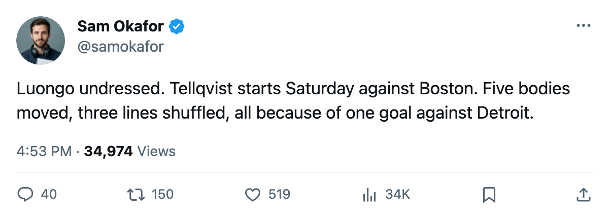

Tellqvist starts Saturday, and three lines look different after Detroit
The coach sat his Conn Smythe winner, moved Chistov to the first line, and returned Lundmark to the card. Boston visits on a 2-game slide.
 Sam OkaforLeafs beat reporter · Queen City Telegram
Sam OkaforLeafs beat reporter · Queen City Telegram
 Toronto Maple Leafs coach moved Mikael Tellqvist73 into the starting crease for Saturday's game against
Toronto Maple Leafs coach moved Mikael Tellqvist73 into the starting crease for Saturday's game against  Boston Bruins at the Air Canada Centre, three days after a 1-2 regulation loss to
Boston Bruins at the Air Canada Centre, three days after a 1-2 regulation loss to  Detroit Red Wings ended a 6-game streak and dropped Toronto's scoring to a single goal.
Detroit Red Wings ended a 6-game streak and dropped Toronto's scoring to a single goal.
 Roberto Luongo95, whose Conn Smythe hangs in the building from last June's Cup run, is undressed. Maxime Ouellet86 is the backup. Tellqvist carries a 73 overall, and the Bureau's Development Index has him on the fallers at -5.
Roberto Luongo95, whose Conn Smythe hangs in the building from last June's Cup run, is undressed. Maxime Ouellet86 is the backup. Tellqvist carries a 73 overall, and the Bureau's Development Index has him on the fallers at -5.
Five bodies moved, three lines shuffled
The forward card reads differently too.  Stanislav Chistov87 moves from the left wing of the second line to the first, joining
Stanislav Chistov87 moves from the left wing of the second line to the first, joining  Mats Sundin92 at centre.
Mats Sundin92 at centre.  Alexander Mogilny89, who had been playing left wing on that unit, shifts to the right side of the same line.
Alexander Mogilny89, who had been playing left wing on that unit, shifts to the right side of the same line.  Rick Nash85 moves down from the third line to the second.
Rick Nash85 moves down from the third line to the second.
 Jamie Lundmark81 returns to the dressing list on the fourth line and picks up a spot on the first power-play unit.
Jamie Lundmark81 returns to the dressing list on the fourth line and picks up a spot on the first power-play unit.  Nikita Alexeev80 adds a power-play slot to his third-line right-wing role. On defence,
Nikita Alexeev80 adds a power-play slot to his third-line right-wing role. On defence,  Bruno St. Jacques66 is back in at the third pair. Andreas Stahle76 is out.
Bruno St. Jacques66 is back in at the third pair. Andreas Stahle76 is out.
Boston arrives on a slide
The Bruins carry 23 points in 17 games against Toronto's 28 in 18. They fell 3-4 in overtime to  Philadelphia Flyers on Wednesday night, their second straight loss.
Philadelphia Flyers on Wednesday night, their second straight loss.  Marty McInnis71 (rib) carries a return date of November 19, the game itself, which makes him a possibility for the lineup.
Marty McInnis71 (rib) carries a return date of November 19, the game itself, which makes him a possibility for the lineup.
The season series is 1-0-0 Boston. They won the first meeting 3-2 earlier this season. Toronto is 9-3 at home and has not lost in regulation at the Air Canada Centre since October 25. Boston is 7-3 on the road.
First place is on the line Saturday. A Bruins win, plus their remaining game in hand, closes the gap.
